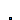
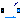

Package with base classes for Buildings.Fluid.Sensors
This package contains base classes that are used to construct the models in Buildings.Fluid.Sensors.
Extends from Modelica.Icons.BasesPackage (Icon for packages containing base classes).
| Name | Description |
|---|---|
|  PartialAbsoluteSensor | Partial component to model a sensor that measures a potential variable |
|  PartialDynamicFlowSensor | Partial component to model sensors that measure flow properties using a dynamic model |
| Partial component to model sensors that measure flow properties |
 Buildings.Fluid.Sensors.BaseClasses.PartialAbsoluteSensor
Buildings.Fluid.Sensors.BaseClasses.PartialAbsoluteSensor
Partial component to model a sensor that measures a potential variable
Partial component to model an absolute sensor. The component can be used for pressure sensor models. Use for other properties such as temperature or density is discouraged, because the enthalpy at the connector can have different meanings, depending on the connection topology. For these properties, use Buildings.Fluid.Sensors.BaseClasses.PartialFlowSensor.
| Type | Name | Default | Description |
|---|---|---|---|
| replaceable package Medium | Modelica.Media.Interfaces.Pa... | Medium in the sensor | |
| Type | Name | Description |
|---|---|---|
| replaceable package Medium | Medium in the sensor | |
| FluidPort_a | port | |
Partial component to model sensors that measure flow properties using a dynamic model

Partial component to model a sensor that measures any intensive properties of a flow, e.g., to get temperature or density in the flow between fluid connectors.
The sensor computes a gain that is zero at zero mass flow rate. This avoids fast transients if the flow is close to zero, thereby improving the numerical efficiency.
Extends from PartialFlowSensor (Partial component to model sensors that measure flow properties).
| Type | Name | Default | Description |
|---|---|---|---|
| replaceable package Medium | PartialMedium | Medium in the component | |
| Time | tau | 1 | Time constant at nominal flow rate [s] |
| Nominal condition | |||
| MassFlowRate | m_flow_nominal | Nominal mass flow rate, used for regularization near zero flow [kg/s] | |
| Initialization | |||
| Init | initType | Modelica.Blocks.Types.Init.I... | Type of initialization (InitialState and InitialOutput are identical) |
| Assumptions | |||
| Boolean | allowFlowReversal | true | = true to allow flow reversal, false restricts to design direction (port_a -> port_b) |
| Advanced | |||
| MassFlowRate | m_flow_small | 1E-4*m_flow_nominal | For bi-directional flow, temperature is regularized in the region |m_flow| < m_flow_small (m_flow_small > 0 required) [kg/s] |
| Type | Name | Description |
|---|---|---|
| FluidPort_a | port_a | Fluid connector a (positive design flow direction is from port_a to port_b) |
| FluidPort_b | port_b | Fluid connector b (positive design flow direction is from port_a to port_b) |
 Buildings.Fluid.Sensors.BaseClasses.PartialFlowSensor
Buildings.Fluid.Sensors.BaseClasses.PartialFlowSensor
Partial component to model sensors that measure flow properties
Partial component to model a sensor. The sensor is ideal. It does not influence mass, energy, species or substance balance, and it has no flow friction.
Extends from Buildings.Fluid.Interfaces.PartialTwoPort (Partial component with two ports).
| Type | Name | Default | Description |
|---|---|---|---|
| replaceable package Medium | PartialMedium | Medium in the component | |
| Nominal condition | |||
| MassFlowRate | m_flow_nominal | Nominal mass flow rate, used for regularization near zero flow [kg/s] | |
| Assumptions | |||
| Boolean | allowFlowReversal | true | = true to allow flow reversal, false restricts to design direction (port_a -> port_b) |
| Advanced | |||
| MassFlowRate | m_flow_small | 1E-4*m_flow_nominal | For bi-directional flow, temperature is regularized in the region |m_flow| < m_flow_small (m_flow_small > 0 required) [kg/s] |
| Type | Name | Description |
|---|---|---|
| FluidPort_a | port_a | Fluid connector a (positive design flow direction is from port_a to port_b) |
| FluidPort_b | port_b | Fluid connector b (positive design flow direction is from port_a to port_b) |